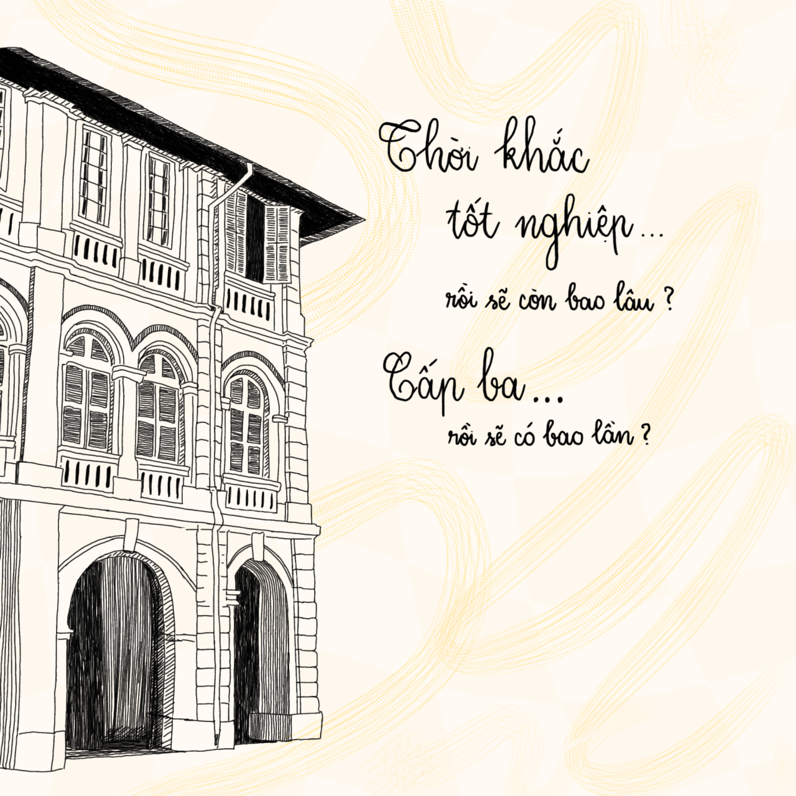

May has arrived. Time flies, and the “Happy New Year” wishes feel like yesterday. The rapid passage of time surprises me even more when I realize that around this time a year ago, I was still a senior student busy with my studies and feeling sentimental about the upcoming farewell. The feeling of nostalgia suddenly hits me a bit more.

By now, most schools have probably finished their final exams. This period must bring a lot of unforgettable emotions for the 12th graders. This is the last final semester of your student life. These are the last moments with your friends, teachers, and school. We have countless fond memories and feelings of nostalgia while still racing against the clock for the most important exam that will open the next door to knowledge—the National High School Exam*. We know there are many extra classes and unfinished practice exams; we know there are many plans for outings and graduation photoshoots being made; we know our time doesn’t allow for everything. But as a “former 18-year-old,” my advice to you is: “Do everything so that you won’t regret it later.”
For those of you who have already secured a commitment with a university: congratulations, and you’re very lucky to have more precious time with your high school! Enjoy these last weeks in your uniform going to school on the familiar road you’ve traveled for three years (even though the weather this year is somewhat erratic). Try experiencing things you’ve never tried there, of course, still within the rules: talk more with your teachers, and you’ll find that their personalities are quite different from their serious image in class; resolve past conflicts with friends; tighten your friendships with those you cherish. Not now, then when?
For those of you still facing the National High School Exam: keep going, and you will make it! Twelve years of study, one or two years of intense review, and you are at the final sprint. Reviewing for exams can be very stressful, so it’s great to have support and encouragement from your teachers and friends at school! So don’t overdo staying home trying to study everything by yourself; go to school diligently, practice exams with your friends, and learn from each other. It will not only help you learn faster but also significantly improve your mental health. Don’t forget to participate in the year-end activities organized by the school. Try your best to make beautiful memories alongside your main task of studying. High school life only happens once!
After graduation, you’ll see that the memes about never being able to have a full-class reunion are true. Each person goes their way, attending different schools, sometimes even in different cities, countries, or continents. It becomes incredibly difficult to arrange a full meeting with those you were once close to. Therefore, cherish and make the most of these precious final moments together.
High school life only passes by once. Writing for myself as well as for everyone, I wish all 12th-grade students a wonderful time before saying goodbye to high school. I am confident that all of you will achieve amazing things on your upcoming journey!
*In Vietnam, to be officially graduated, we not only have to finish Grade 12 in each individual’s high school but also have to attend the National High School Exam and meet the grade requirements. Furthermore, this exam is very important to students since the results are used by their dream universities in Vietnam to assess their ability compared to others, besides other admission methods happening earlier such as high school transcripts (similar to Canada, with supplementary factors such as IELTS, SAT, or bonuses by earning prizes in academic competitions) and Competency Assessment Exam results (Vietnamese: Kì thi Đánh Giá Năng Lực, which assesses students’ collective knowledge in roughly 8 subjects in a bell curve). Nowadays, people mostly prioritize applying other methods than fully rely their lives on the National High School Exam, but some cases, such as Medical schools, they will have just only one chance to be admitted: via the National High School Exam.